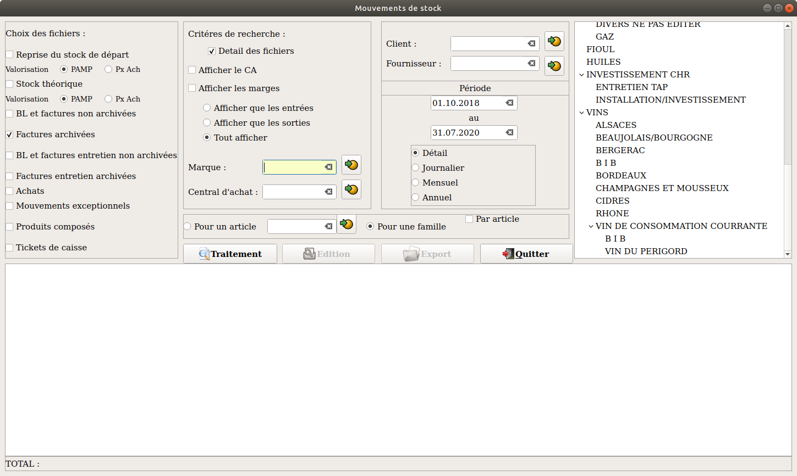

INTERROGATION DES MOUVEMENTS DE STOCK

Choix des fichiers :
Vous allez pouvoir sélectionner les fichiers qui seront pris en compte dans la recherche avec une particularité pour la reprise sur stock de départ et stock théorique qui sont extraits de la fiche article, leurs valorisations ne seront affichées que si "Afficher le CA" est coché.
Critères de recherche :
Sert à avoir le détail des mouvements de chaque fichiers sélectionnés, si par exemple je veux avoir les mouvements des produits composés et des mouvements exceptionnels mensuellement je peux avoir deux format de sortie, soit une ligne qui va faire la somme de tous les mouvements soit deux lignes qui vont détailler les deux fichiers.
On choisi les colonnes que l'on veut afficher. Si on veut avoir nos stocks négatifs il suffit de cocher stocks théoriques et afficher que les sorties par exemple.
Puis on renseigne les différents critères de tri si besoin et on arrive à la période qui va permettre de borner la recherche et d'indiquer si on veut que nos mouvements soient regroupé par jour, mois, année ou pas du tout.
Il nous reste plus qu'a appliquer ces critères de recherche soit à un article soit une/des familles qui nous donne encore le choix d'avoir des totaux soit par famille soit par article.
La sélection des familles se fait avec les touches CTRL et/ou majuscule combinée avec la souris.
Il peut y avoir des différences de chiffre entre les statistiques clients et les mouvements de stock, si par exemple vous créez un bon le mois M et que vous le facturez le mois M+1 en mouvement de stock il apparaîtra sur M et en statistiques clients sur M+1.